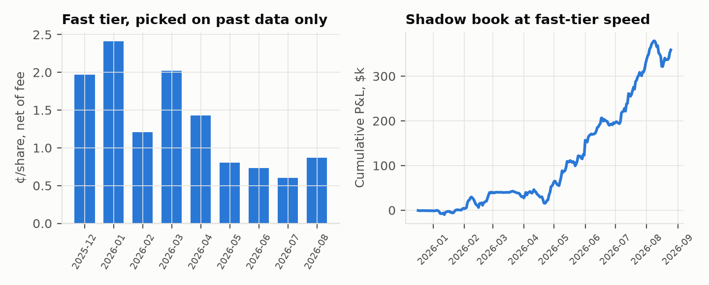

Fig. 1. Taker markouts 30 s after each print, net of fee, by seconds since the score event (in
sample; fast tier = wallets qualified on earlier months only).
Fig. 1. Taker markouts 30 s after each print, net of fee, by seconds since the score event (in
sample; fast tier = wallets qualified on earlier months only).Gator Quant Hacks 2026 · Systematic Trading · Repo: <GITHUB_URL> · Reproduce: python run_all.py --oos
A tennis point ends in tiers. Ball tracking knows the landing point while the ball is still in the
air. The umpire knows at the bounce. Official data feeds, and the market makers that consume them,
know one to a few seconds later. Streams and score widgets know tens of seconds later. Match-win
probability is a known function of the score; we built the exact point-level Markov chain
(src/markov.py). So every point moves fair value by a computable amount, its leverage. A
simulated ATP best-of-3 has ~161 points with mean |leverage| of 5.7%, fair value travels $4.20 per
share over the match, and the ten biggest points carry 23% of that.
Who is on the other side? Whoever acts on an older tier. A trader who knows the point before the
book reprices buys from a stale resting order. One who acts after it reprices pays the spread to
someone faster. The gap is physical (stream delays, frame rates, data latency), so it persists.
Polymarket shows it knows this: sports markets hold every marketable order for 1–3 s
(secondsDelay) to protect makers.
Hypotheses were committed before any result (HYPOTHESIS.md, commit 7232986). Every later change
is in DEVIATIONS.md.
rate·p(1−p) per share; rate 0,
0.03, then 0.05) and its own order delay (3 s, then 1 s from May 2026).9d61d1b) and was evaluated once (results/oos_peeks.log).Table 1. Pre-registered and post-hoc tests, net of fees and historical spreads (¢/share, 95% CI clustered by match).
| Test | In sample (10,467 matches) | Out of sample (2,617) | Verdict |
|---|---|---|---|
| H1 follow the jump after the delay | −1.61 [−1.65, −1.57]; all 20 variants −1.50 to −1.86 | −2.08 [−2.17, −1.98] | Fails |
| H2 buy favourites entering 0.85–0.97 | −0.41 [−1.44, 0.59]; all 6 CIs span 0 | +0.80 [−1.36, 2.66] | No edge |
| Live-price calibration | within ±1.0¢ in every band 0.5–0.99 | within ±1.1¢ | Efficient |
| H5 maker quoting after jumps (post-hoc) | +0.22 [−0.01, 0.43] vs always-on +0.13 | +0.16 [−0.49, 0.87] vs −0.52 | Inconclusive |
| H6 fast tier, 30 s markout (post-hoc) | +0.6 to +2.4, 9/9 months > 0 | +0.83, +0.70, +0.44 (3/3) | Holds |
| Other takers, same window | −0.5 to −1.7, 9/9 months < 0 | −1.2 to −1.9 | |
| Copying the fast tier (+3 s) | < 0 in 9/9 months | < 0 in 3/3 | Speed, not signal |
| H6 shadow book, held to resolution | +1.16 [0.79, 1.54]; Sharpe 5.5; max DD −20% | +0.57 [−0.16, 1.40]; −$36k | Fee-bound |
Fig. 1. Taker markouts 30 s after each print, net of fee, by seconds since the score event (in
sample; fast tier = wallets qualified on earlier months only).
Chasing the move loses (H1). By the time a delayed order fills, the book has moved, and you pay the spread to whoever moved it. Prices are calibrated (H2). There is no slow-money edge.
The fast tier is real and persistent (H6). Each month we qualify wallets using only earlier months: at least 30 prints within 3 s of a score event, at least 10 matches, and t > 3 on 30 s markout. Their next-month prints in that window beat the market in all 11 months (Dec 2025–Oct 2026), out of sample included. Everyone else in the same window loses about 1¢. The fast tier makes the most in the first 3 s, and copying it with a 3 s lag loses: the edge is speed.
But it is fee-bound. Net to resolution, the edge fell from 1.5–1.6¢ (3 s delay) to 1.19¢ (1 s, 3% fee) to 0.54¢ (1 s, 5% fee) as the fee rose and qualifying wallets went 4 → 131. Out of sample (all 1 s/5%), the per-share edge is +0.57¢ with a CI spanning 0, and the fixed-dollar shadow book lost $36k: larger fast-tier trades lost while small ones won. The average fee alone, 0.99¢/share, is about two-thirds of the gross edge. We report this as it came out.

Fig. 3. Left: fast-tier net markout by month (*Aug 2026 includes IS days before Aug 25). Right: shadow book (≤$1k/trade, ≤$3k/match, held to resolution).[TT_RESULT].[TENNIS_VIDEO_RESULT].COURTSIDE, the strategy. For each point the Markov model gives the fair-value jump at stake.
When tracking calls the point before it lands, take the side it favours if
leverage × P(correct call) − fee − ½ spread > 0, sized by leverage and visible depth. The
evidence says this pays only if you are faster than today's fast tier, not equal to it. The
tracking lead (100–300 ms on the bounce) stacks on a low-latency official feed. Broadcast video
alone is tier 4.
restricted). Deployment requires licensed low-latency data, a permitted venue and jurisdiction,
and legal review. The repo only reads public data and never places orders.44 strategy variants were backtested (H1 20, H2 6, H5 17, H6 1); all are in results/summary.json.
Exploratory calibration, tier and wallet studies are disclosed in DEVIATIONS.md. H5 and H6 were
written after seeing in-sample data, so only their OOS results are tests. The shadow book estimates
the opportunity at fast-tier speed: it uses those wallets' fills, not ours. Expected best Sharpe
from luck across 44 trials is ~2.7 (Bailey & López de Prado 2014). References: Bailey et al.
(2014); Harvey, Liu & Zhu (2016); Klaassen & Magnus (2001), Are points in tennis i.i.d.?;
Polymarket fee and websocket docs; OpenTTGames (Voeikov et al. 2020, TTNet).